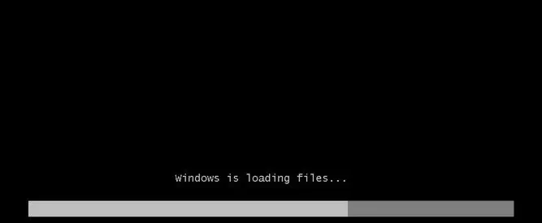
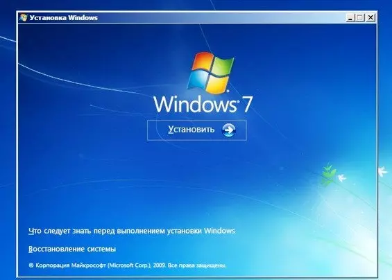
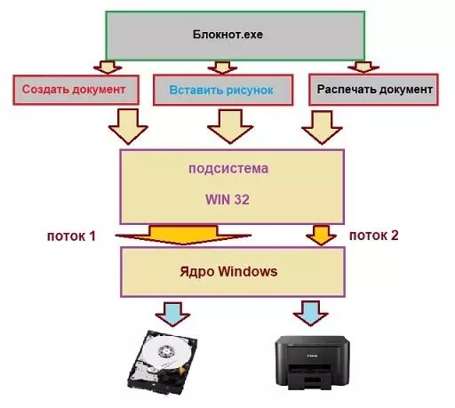

Операционные системы
1.Операционная система (ОС, OS, operating system) — это набор программ, обеспечивающих работу компьютера или другого устройства и взаимодействие с ним пользователя.
2.Операционная система состоит из:ядра, драйверов и пользовательский интерфейс(бывает графическим (GUI) и командным (CLI))
3.Виды операционных систем
Все существующие ОС можно классифицировать по нескольким признакам: разрядности, типу лицензии и области применения.
По разрядности делятся на 32-битные и на 64-битные.
По типу лицензии делятся на коммерческие и свободно распространяемые.
По облости применения делятся на серверные, клиентские и мобильные.
4.История развития операционных систем
История операционных систем насчитывает около 70 лет и делится на три этапа.
Первый этап (1955–1965 годы)
1955: Разработка GM-NAA I/O для IBM 704 инженером Робертом Л. Патриком и программистом Оуэном Моком. Эта система автоматизировала выполнение сложных математических вычислений.
1964: Появление ОС Multics, внедрившей концепции параллельной работы программ, виртуальной памяти и файловой системы на основе дерева каталогов.
Второй этап (1965–1980 годы)
1969: Разработка ОС Unix в Bell Labs. Она поддерживала язык C и протокол TCP/IP, предоставляя возможность многопользовательской работы.
1973: Создание первой графической ОС Alto OS компанией Xerox, которая имела оконную систему с элементами управления.
Третий этап (1980 — настоящее время)
1984: Выход системы System 1 для Macintosh от Apple, основанной на Alto OS.
1985: Microsoft выпускает Windows 1.0 как графическую оболочку для MS-DOS.
1991: Линус Торвальдс создает Linux на основе Unix, который становится основой для многих дистрибутивов.
2007: Появление iOS от Apple, проложившей путь к мобильным операционным системам.
2008: Выход Android OS, конкурента iOS, с открытым исходным кодом и возможностью кастомизации настроек.
Эти этапы демонстрируют эволюцию ОС от мейнфреймов до современных мобильных платформ.
5.Популярные операционные системы:Windows, macOS, Android и iOS.

Компоненты Windows, или из чего Windows состоит
Как работает Windows блочно можно отобразить так:

Как работает Windows: программная оболочка = Shell
Это часть операционной системы, которая завязана и с пользователем и с приложениями. Именно шелл позволяет нам запускать флешки, устанавливать программы, запускать word-вый документ и печатать в нём, сохраняя в любое дозволенное системой место, которое заметно проводнику. Shell – это и File Explorer (проводник Windows), и контрольная панель Пуск, и окна Свойства системы и Мой компьютер. Человек или пользователь знает шелл как различные инструменты пользовательского интерфейса, такие как диалоговые окна, ярлыки и иконки, контекстные меню дополнительных команд.

А для программ шелл это команды и процедуры, которые эти программы могут вызывать: печать информацию через принтер, читать данные из баз, отображать что-то на экране.
Сам шелл состоит из нескольких подсистем, которые управляются в пользовательском режиме. Такой режим означает, что эти подсистемы имеют очень ограниченный доступ к системной информации, и доступ к “железу” может осуществляться ТОЛЬКО через системные службы (службы самой Windows). Одна из таких подсистем – подсистема безопасности Win32 – обеспечивает вход в систему (регистрацию пользователя), сохранение и распространение его привилегий на файлы и папки, а также другие функции безопасности. Абсолютно все программы и приложения “здороваются с Windows” только через подсистему Win32.
Как работает Windows : Ядро
Как и в других ОС, отвечает за работу с оборудованием, которое внутри компьютера находится или во время работы к компьютеру “пристёгивается”. Режим ядра полномочий имеет гораздо больше. Никакая программа, установленная в Windows, не имеет доступа к “железу” напрямую – только через шелл, который, в свою очередь, посылает все запросы к ядру. Такая система взаимодействия обеспечивает стабильную работу ОС. Это чем-то напоминает ресторан: перед тем как заказать блюдо, вам нужно позвать официанта (к шеф-повару и на саму кухню вас не пропустят).
Ядро состоит из двух компонентов:
слой аппаратных абстракций HAL – hardware abstraction layer – (ближайший к железу уровень)
уровень исполнительных служб (обеспечивает взаимодействие подсистем в пользовательском режиме со слоем аппаратных абстракций)
Что здесь нужно запомнить? Логика работы ясна уже из описания: исполнительные службы Windows работают с оборудованием при помощи самого HAL и драйверов для конкретного устройства. Такой принцип работы устанавливается незаметно для глаз пользователя в момент установки Windows на компьютер. В тот самый момент, когда мы видим строки состояния установки компонентов и служб/программ, и строится структура слоя HAL на основе процессора, который в материнской плате вашей машины установлен. То есть привычные процессы во время установки Windows предстают теперь в таком свете:

загрузка шелл пользовательского интерфейса

приглашение к компиляции HAL
То, что появится после установки ОС, перенести на другой компьютер один в один не получится: для нормальной работы в новой конфигурации до– или переустановка отдельных драйверов или целого их пакета неизбежна.
Как работает Windows: Данные конфигурации
Ну, а всем операционным системам нужно место, где данные о программах и оборудовании, а также настройках и предпочтении пользователя можно хранить. Нужно хранить информацию и о том, как пользователь хочет, чтобы Windows и программы выглядели, где хранить скачиваемое и создаваемое и т.д. Для всего этого (или для почти всего) Windows использует … правильно, реестр. Некая информация хранится в файлах инициализации (характерные файлы с расширением .ini и .inf).
И когда установленная программа запускается, перед появлением какого-либо окна она сначала посмотрит реестр и прочитает эти файлы, и только потом уже запуск приложения можно считать успешным.
Как Windows управляет программами?
Если программа установлена, мы подразумеваем, что её остов где-то хранится. Чаще всего это жёсткий диск или флешка. Когда пользователь запускает программу, некоторые из её файлов копируются в оперативную память. Так появляется процесс. практически в том виде, каком мы видим его в Диспетчере задач или Process Explorer. Процессом можно назвать программу, запущенную вместе с соответствующими системными службами и другими ресурсами. Ресурсы нередко включают в себя и другие программы, включая захват дополнительных ячеек оперативной памяти для временного хранения данных. Когда процесс делает запрос к системе по типу “Мне нужны ресурсы!”, подразумевается, что программа обращается именно к подсистеме Win32. Так появляется поток данных. Поток – это единичная, выделенная задача (запустить или создать документ, вставить рисунок из буфера обмена, распечатать документ на принтере и т.д.). Схематично это выглядит так:

Как видите, потоков может быть несколько. Это называется многопоточность/мультипоточность: например, окна браузеров могут запускаться в нескольких вкладках или нескольких отдельных окнах. Выражаясь технически, в обоих случаях речь идёт о нескольких разных процессах браузер.exe.